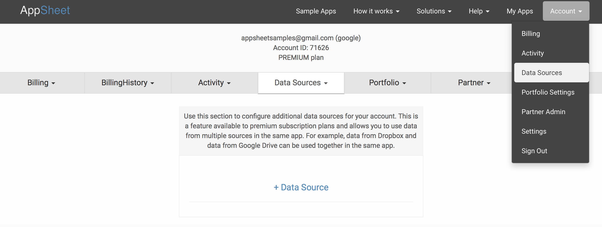

Multiple data sources – AppSheet
Your AppSheet apps can access data from multiple data sources. The AppSheet account always has a primary data source used for account authentication (for many of our customers, this is Google Drive) and the spreadsheets from that account can be used in your apps. However, you can add other data sources (eg: Office 365, Smartsheet, Dropbox, Box, and more).
To add a new data source, go to your Account tab where you can examine your current data sources and add or remove sources. Adding a source is as simple as providing authentication.

All the data sources in your account are available when you add tables to your AppSheet app. In fact, the same app can combine tables from multiple data sources. This becomes a really powerful mechanism to "mashup" information sitting in different cloud-based data sources.